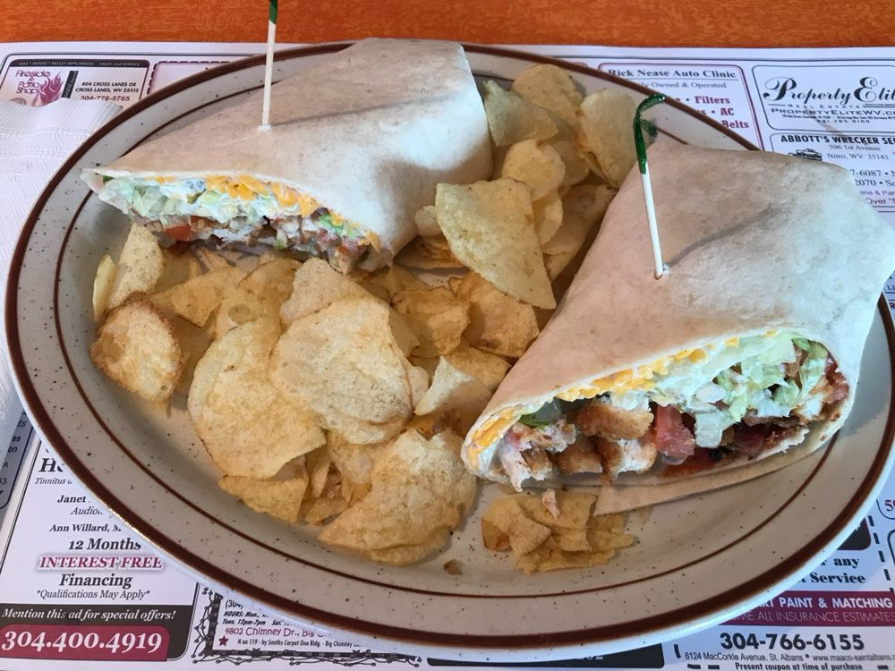
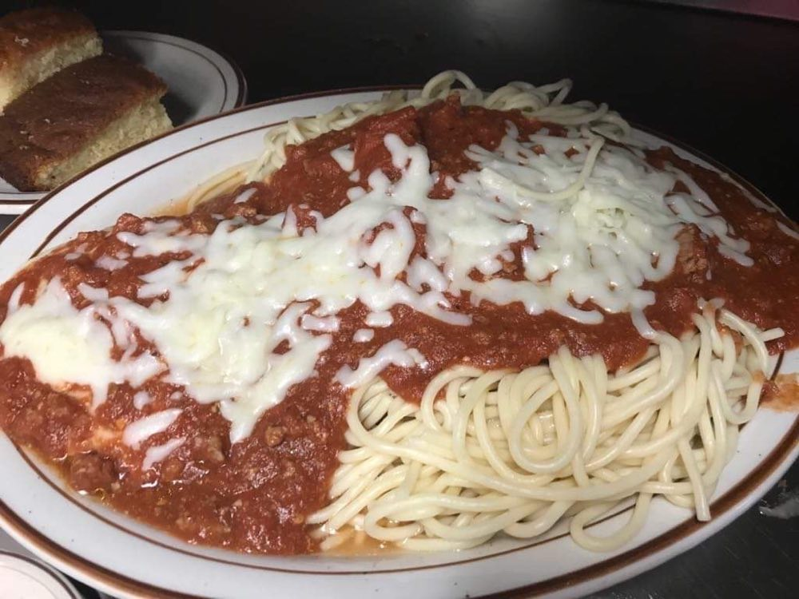

Family owned and operated since 1960
Our fullmenu enjoy!
Homestyle dinners, big sandwiches, spaghetti with homemade meat sauce and pies that change every day. Check the specials board for the daily dishes.
Specialties
Homestyle dinners, served with your choice of two sides and rolls or cornbread unless noted.
Roast Beef & Gravy
Served with your choice of two sides and rolls or cornbread.
Grilled Onion Steak
12 oz Certified Angus chopped sirloin smothered in grilled onions. With a garden salad and French fries, or two sides and rolls or cornbread.
German Style Steak
12 oz Certified Angus chopped sirloin topped with American cheese and smothered in onions and mushrooms. With a garden salad and French fries, or two sides.
Steak Supreme
6 oz ground veal steak breaded in flour and deep fried, smothered with mozzarella, grilled onions, mushrooms and green peppers, topped with sour cream and tomatoes. Garden salad and fries, or two sides, with rolls or cornbread.
The Real Big Diehl
12 oz Certified Angus chopped sirloin with a garden salad and French fries, or two sides, with rolls or cornbread.
Grilled Ham Steak
A large, thick slice of grilled ham with your choice of two sides and rolls or cornbread.
Country Cured Ham
A large, thick slice of country cured ham with your choice of two sides and rolls or cornbread.
Pork Chops
Two pork chops rolled in flour and grilled, with two sides and rolls or cornbread.
Vegetable Plate
Your choice of three vegetables with rolls or cornbread.
Large Bowl of Pinto Beans
Served with your choice of one side and rolls or cornbread.
Sandwiches
Add French fries, beer battered onion rings, bacon (4), an extra slice of cheese or chips.
Bar-B-Q
Hand pulled pork barbecue on a grilled bun with homemade slaw.
Hot Roast Beef Sandwich
Roast beef with mashed potatoes over two slices of bread, smothered in gravy.
Hamburger
5 oz grilled hamburger with lettuce, tomato, onion, pickle and mayonnaise.
Cheeseburger
5 oz grilled cheeseburger with lettuce, tomato, onion, pickle and mayonnaise.
Grilled Chicken Breast Sandwich
Grilled chicken breast with lettuce, tomato, pickle and mayonnaise on a wheat bun.
Crispy Chicken Breast Sandwich
Breaded chicken breast with lettuce, tomato, onion, pickle and mayonnaise on a large grilled seeded bun.
Hot Bologna
Premium thick sliced bologna with our homemade sauce, lettuce, tomato, onion, pickle and mayonnaise on a large grilled seeded bun.
J.R. House Chicken Fajita Hoagie
Grilled onions and green peppers, lettuce, tomato and our homemade sauce on a large sub bun. Served with chips.
Club Sandwich
Grilled ham, crispy bacon, American cheese, lettuce, tomato and mayonnaise on three layers of toast. Served with chips.
Josh Culbertson Sandwich
12 oz Certified Angus chopped sirloin with American cheese, lettuce, tomato, onion and pickle on a huge Grecian bun.
Grilled Summertime
Grilled ham with provolone, lettuce, tomato, onion, pickles and mayonnaise on a large grilled Grecian bun.
Yogi
Premium thick sliced bologna and grilled ham with American and provolone cheese, lettuce, tomato, onion, pickle and mayonnaise on a large Grecian bun.
Fresh Chicken Salad Sandwich
On wheat berry bread with lettuce and tomato. Served with chips.



Spaghetti
With our homemade meat sauce or marinara, served with rolls, garlic or Grecian bread.
Large Spaghetti
A large portion of spaghetti with homemade meat sauce or marinara.
Small Spaghetti
With homemade meat sauce or marinara.
Veal Parmesan
Breaded veal steak smothered in mozzarella, served over spaghetti with homemade meat or marinara sauce.
Chicken Parmesan
Breaded chicken breast smothered in mozzarella, served over spaghetti with homemade meat or marinara sauce.
Chicken
Served with your choice of two sides and rolls or cornbread.
Breaded Chicken Fillets
Boneless Fried Chicken Breast
8 ounces.
Grilled Chicken Breast
8 ounces.
Fish
Served with your choice of two sides and rolls or cornbread.
Breaded Flounder
Grilled Breaded Rainbow Trout
Beer Battered Pollock
9 ounces.
Salads
Chef salads are served with your choice of dressing.
Crispy Chicken Chef Salad
Breaded chicken breast with American and mozzarella cheese, boiled eggs, lettuce, cucumbers, tomatoes, carrots, onions, radishes and croutons.
Grilled Chicken Chef Salad
Grilled chicken breast with American and mozzarella cheese, boiled eggs, lettuce, cucumbers, tomatoes, carrots, onion, radishes and croutons.
Ham & Turkey Chef Salad
A large portion of ham and turkey with American and mozzarella cheese, boiled eggs, lettuce, cucumbers, tomatoes, carrots, onions, radishes and croutons.
Ham Chef Salad
A large portion of ham with the chef salad fixings.
Turkey Chef Salad
A large portion of turkey with the chef salad fixings.
Garden Salad
Lettuce, tomatoes, carrots, cucumbers, onions and radishes. Ask your server for American shredded cheese and croutons at no extra charge.
Homemade Cole Slaw
Cottage Cheese
Just for kids
Kids Chicken
With one side and one roll or cornbread.
Kids Fish
With one side and one roll or cornbread.
Kids Spaghetti
With homemade meat sauce or marinara and one roll.
Kids Grilled Cheese
With one side.
Sides
A garden salad can take the place of a side.
- Mashed Potatoes
- Green Beans
- Sage Dressing
- Fried Potatoes
- Fried Apples
- Pinto Beans
- Cottage Cheese
- Loaded Potato Cake
- Apple Sauce
- Chicken Rice Pilaf
- Cole Slaw
- French Fries
Homemade desserts
They change daily. Ask what's in the pie case today.
- Coconut Creme Pie
- Graham Cracker Pie
- Chocolate Creme Pie
- Peanut Butter Pie
- Strawberry Pie
- Banana Creme Pie
- Triple Layer Carrot Cake
- Triple Layer Chocolate Cake
- Cobbler
- Apple Dumplings
- Banana Split Cake
Drinks & dressings
Fountain drinks
Pepsi, Diet Caffeine Free Pepsi, Sierra Mist, Mountain Dew, Diet Mountain Dew, Dr Pepper, Diet Dr Pepper and Lemonade.
Tea & coffee
Fresh brewed sweet and unsweet tea. Fresh ground regular and decaffeinated coffee.
Dressings
Homemade Ranch and Thousand Island, Blue Cheese, Honey Mustard, Italian, Fat Free French, Fat Free Italian and Fat Free Ranch.
Daily specials
The specials board changes every day. See this week's lineup or call 304-755-9353.
Prices aren't listed online. Call 304-755-9353 to ask about today's prices, specials and carry-out orders.